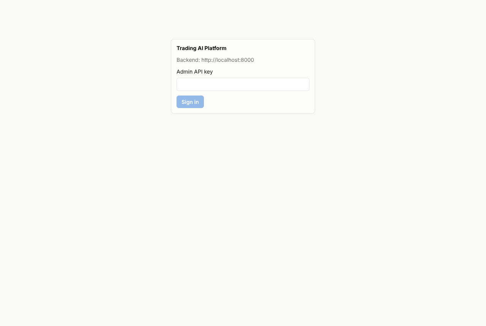
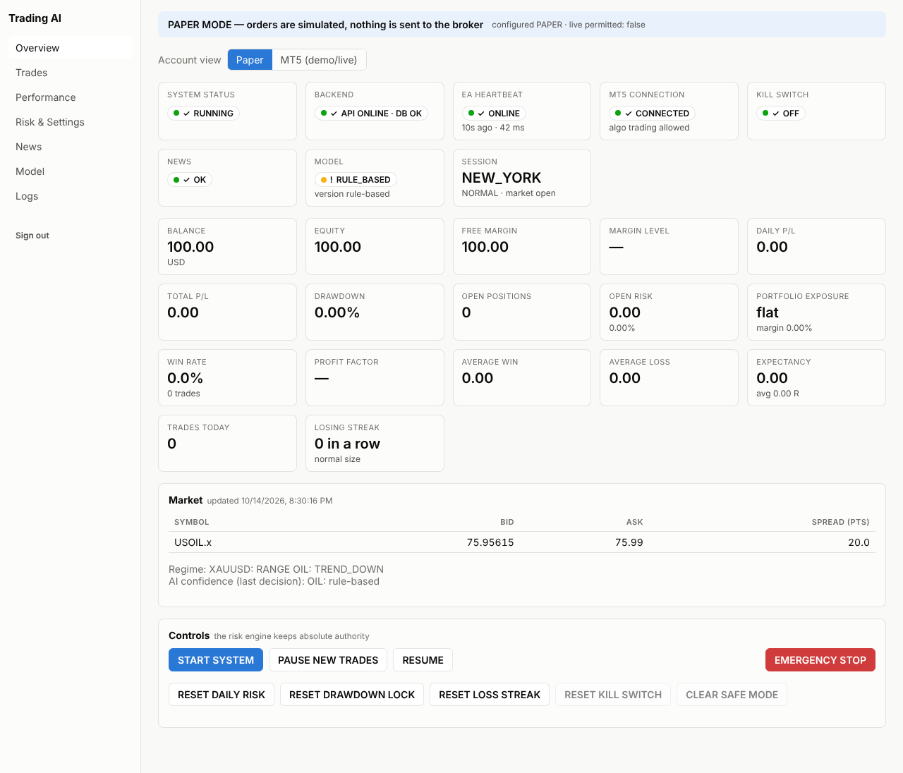
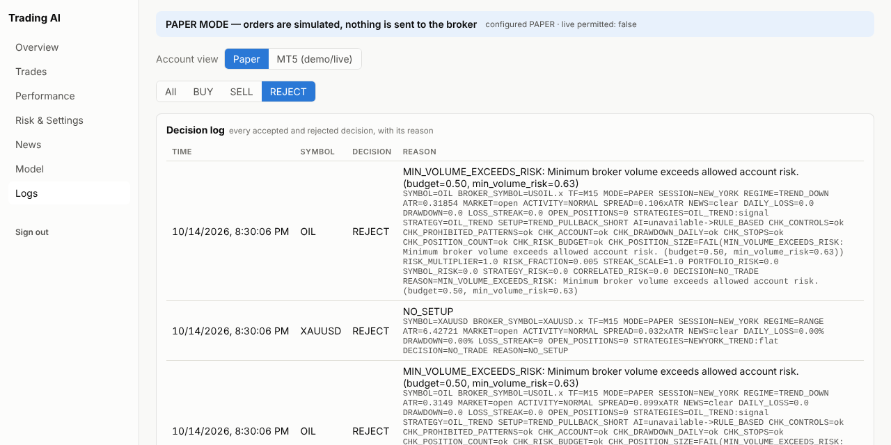
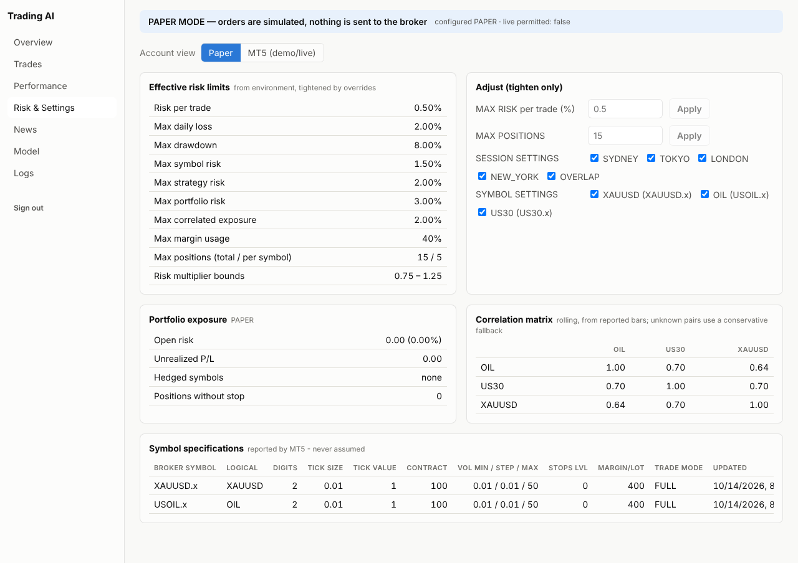

<title>PRO_MAX Setup Guide</title>
<meta name="claude:viewport-fit-sides" content="cover">
<link rel="preconnect" href="https://fonts.googleapis.com">
<link rel="stylesheet" href="https://fonts.googleapis.com/css2?family=Bricolage+Grotesque:opsz,wght@12..96,600;12..96,700&family=IBM+Plex+Sans:wght@400;500;600&family=IBM+Plex+Mono:wght@400;500&display=swap">
<style>
/* Layout: one reading column (~70ch) with full-width figures; steps are a real sequence, so they are numbered. */
:root {
  --bg: #f5f7f9;
  --surface: #ffffff;
  --ink: #141a22;
  --ink-2: #4a5563;
  --line: #d9dfe6;
  --accent: #1d5f8f;
  --accent-soft: #e3eef7;
  --good: #1f7a3a;
  --warn: #9a6400;
  --warn-soft: #fdf3dc;
  --bad: #b3302d;
  --bad-soft: #fbe6e5;
  --code-bg: #eef2f6;
  --font-display: "Bricolage Grotesque", "IBM Plex Sans", system-ui, sans-serif;
  --font-body: "IBM Plex Sans", system-ui, -apple-system, "Segoe UI", sans-serif;
  --font-mono: "IBM Plex Mono", ui-monospace, "SFMono-Regular", Menlo, monospace;
}
@media (prefers-color-scheme: dark) {
  :root:not([data-theme="light"]) {
    --bg: #11161c; --surface: #18202a; --ink: #e7ecf2; --ink-2: #a7b2bf; --line: #2a3542;
    --accent: #79b6e3; --accent-soft: #1b2d3d; --good: #5cc27b; --warn: #e8b552; --warn-soft: #2e2615;
    --bad: #f0807c; --bad-soft: #351b1b; --code-bg: #1e2833; color-scheme: dark;
  }
}
:root[data-theme="dark"] {
  --bg: #11161c; --surface: #18202a; --ink: #e7ecf2; --ink-2: #a7b2bf; --line: #2a3542;
  --accent: #79b6e3; --accent-soft: #1b2d3d; --good: #5cc27b; --warn: #e8b552; --warn-soft: #2e2615;
  --bad: #f0807c; --bad-soft: #351b1b; --code-bg: #1e2833; color-scheme: dark;
}
* { box-sizing: border-box; }
body {
  background: var(--bg); color: var(--ink); font-family: var(--font-body); font-size: 16px; line-height: 1.6;
  padding-left: max(16px, env(safe-area-inset-left, 0px)); padding-right: max(16px, env(safe-area-inset-right, 0px));
  padding-block: 32px 64px;
}
main { max-width: 860px; margin: 0 auto; display: grid; gap: 40px; }
.prose { max-width: 70ch; }
h1, h2, h3 { font-family: var(--font-display); text-wrap: balance; line-height: 1.15; margin: 0; }
h1 { font-size: clamp(2rem, 5vw, 2.8rem); letter-spacing: -0.01em; }
h2 { font-size: 1.6rem; }
h3 { font-size: 1.15rem; }
p { margin: 0; }
section { display: grid; gap: 16px; }
.eyebrow { font-family: var(--font-mono); font-size: 0.78rem; letter-spacing: 0.08em; text-transform: uppercase; color: var(--accent); }
.lead { font-size: 1.12rem; color: var(--ink-2); max-width: 64ch; }
a { color: var(--accent); }
code, kbd { font-family: var(--font-mono); font-size: 0.88em; background: var(--code-bg); padding: 1px 5px; border-radius: 4px; }
kbd { border: 1px solid var(--line); }
ul, ol { margin: 0; padding-left: 1.3em; display: grid; gap: 6px; }

.callout { border-radius: 8px; padding: 14px 16px; display: grid; gap: 6px; }
.callout.warn { background: var(--warn-soft); }
.callout.bad { background: var(--bad-soft); }
.callout.info { background: var(--accent-soft); }
.callout strong { font-family: var(--font-display); font-size: 1.02rem; }

figure { margin: 0; display: grid; gap: 8px; min-width: 0; }
figure img { border: 1px solid var(--line); border-radius: 8px; display: block; max-width: 100%; height: auto; }
figcaption { font-size: 0.88rem; color: var(--ink-2); }
.diagram { background: var(--surface); border: 1px solid var(--line); border-radius: 10px; padding: 12px; overflow-x: auto; }
.diagram svg { display: block; width: 100%; min-width: 560px; height: auto; }
svg text { font-family: var(--font-body); }
.s-box { fill: var(--surface); stroke: var(--line); stroke-width: 1.5; }
.s-group { fill: var(--accent-soft); stroke: var(--accent); stroke-width: 1.5; }
.s-warn { fill: var(--warn-soft); stroke: var(--warn); stroke-width: 1.5; }
.s-bad { fill: var(--bad-soft); stroke: var(--bad); stroke-width: 1.5; }
.s-good { fill: var(--surface); stroke: var(--good); stroke-width: 1.5; }
.s-title { fill: var(--ink); font-weight: 600; font-size: 15px; }
.s-text { fill: var(--ink); font-size: 13px; }
.s-muted { fill: var(--ink-2); font-size: 12px; }
.s-accent { fill: var(--accent); font-size: 12px; font-weight: 600; }
.s-arrow { stroke: var(--accent); stroke-width: 2; fill: none; }
.s-arrow-muted { stroke: var(--ink-2); stroke-width: 1.5; fill: none; stroke-dasharray: 5 4; }
.s-fill-accent { fill: var(--accent); }
.s-fill-good { fill: var(--good); }
.s-fill-line { fill: var(--line); }

.steps { list-style: none; padding: 0; margin: 0; display: grid; gap: 28px; counter-reset: step; }
.step { display: grid; grid-template-columns: 44px minmax(0, 1fr); gap: 14px; }
.step::before {
  counter-increment: step; content: counter(step);
  width: 36px; height: 36px; border-radius: 50%; display: grid; place-items: center;
  background: var(--accent); color: var(--bg); font-family: var(--font-display); font-weight: 700;
}
.step > div { display: grid; gap: 12px; min-width: 0; }
.where { font-family: var(--font-mono); font-size: 0.76rem; letter-spacing: 0.06em; text-transform: uppercase; color: var(--ink-2); }

.table-wrap { overflow-x: auto; border: 1px solid var(--line); border-radius: 8px; background: var(--surface); }
table { border-collapse: collapse; width: 100%; font-size: 0.92rem; }
th, td { text-align: left; padding: 8px 12px; border-bottom: 1px solid var(--line); vertical-align: top; }
tr:last-child td { border-bottom: 0; }
th { font-size: 0.74rem; letter-spacing: 0.06em; text-transform: uppercase; color: var(--ink-2); font-weight: 600; }
td.num { font-variant-numeric: tabular-nums; text-align: right; white-space: nowrap; }

.code { position: relative; background: var(--code-bg); border-radius: 8px; padding: 12px 14px; overflow-x: auto; }
.code pre { margin: 0; font-family: var(--font-mono); font-size: 0.86rem; line-height: 1.5; white-space: pre; }
.copy {
  position: absolute; top: 8px; right: 8px; font: 500 0.75rem var(--font-body); color: var(--ink);
  background: var(--surface); border: 1px solid var(--line); border-radius: 5px; padding: 3px 8px; cursor: pointer;
}
.copy:focus-visible, a:focus-visible { outline: 2px solid var(--accent); outline-offset: 2px; }
.check { list-style: none; padding: 0; }
.check li { display: grid; grid-template-columns: 22px minmax(0, 1fr); gap: 6px; }
.check li::before { content: "✓"; color: var(--good); font-weight: 700; }
.toc { display: flex; flex-wrap: wrap; gap: 8px 18px; font-size: 0.92rem; }
hr { border: 0; border-top: 1px solid var(--line); margin: 0; }
@media (max-width: 520px) { .step { grid-template-columns: minmax(0, 1fr); } .step::before { width: 30px; height: 30px; } }
@media (prefers-reduced-motion: reduce) { * { scroll-behavior: auto !important; } }
</style>

<main>
  <header class="prose" style="display:grid;gap:14px">
    <span class="eyebrow">trading-ai-platform · PRO_MAX_EA · CFI MT5</span>
    <h1>Set up your trading bot, step by step</h1>
    <p class="lead">From zero to a bot that watches gold, oil and US30 around the clock in PAPER mode. Nothing here
      sends a real order. Real orders come only after demo testing, and you switch them on yourself.</p>
    <nav class="toc" aria-label="Contents">
      <a href="#how">How it works</a><a href="#risk">How it limits losses</a><a href="#before">Before you start</a>
      <a href="#render">Part A · Render</a><a href="#mt5">Part B · MT5</a><a href="#check">Check it works</a>
      <a href="#next">Paper → demo → live</a><a href="#help">If something fails</a>
    </nav>
  </header>

  <div class="callout bad prose">
    <strong>Read this first</strong>
    <p>No trading software can promise profit, and this bot has not yet been tested on real market data. It is
      built to protect the account first: it will often decide <em>not</em> to trade, and that is normal.
      Judge it only on out-of-sample backtests and weeks of demo trading.</p>
  </div>

  <section id="how">
    <span class="eyebrow">Overview</span>
    <h2>How the pieces fit</h2>
    <p class="prose">The "brain" (signals, risk rules, database, dashboard) runs on <strong>Render</strong> in the cloud.
      MetaTrader&nbsp;5 is a Windows program, so the <strong>EA</strong> (the part that talks to CFI) runs on a Windows
      machine: Parallels on your Mac, or a rented Windows VPS if you want 24/5 without your Mac switched on.</p>
    <div class="diagram" role="img" aria-label="Diagram: the EA on Windows sends candle data to the Render API and receives BUY, SELL or NO TRADE; only in demo or live mode does the EA send orders to CFI; you watch everything on the dashboard.">
      <svg viewBox="0 0 820 330" xmlns="http://www.w3.org/2000/svg">
        <defs><marker id="ah" viewBox="0 0 10 10" refX="9" refY="5" markerWidth="7" markerHeight="7" orient="auto"><path d="M0,0 L10,5 L0,10 z" class="s-fill-accent"/></marker></defs>
        <rect x="20" y="20" width="300" height="200" rx="12" class="s-group"/>
        <text x="40" y="48" class="s-title">Render (cloud)</text>
        <rect x="40" y="62" width="260" height="44" rx="8" class="s-box"/><text x="56" y="89" class="s-text">API · signals · risk engine · paper broker</text>
        <rect x="40" y="114" width="260" height="40" rx="8" class="s-box"/><text x="56" y="139" class="s-text">PostgreSQL database</text>
        <rect x="40" y="162" width="260" height="40" rx="8" class="s-box"/><text x="56" y="187" class="s-text">Dashboard website</text>

        <rect x="500" y="20" width="300" height="140" rx="12" class="s-group"/>
        <text x="520" y="48" class="s-title">Windows PC or VPS</text>
        <rect x="520" y="62" width="260" height="40" rx="8" class="s-box"/><text x="536" y="87" class="s-text">MetaTrader 5 (CFI demo first)</text>
        <rect x="520" y="108" width="260" height="40" rx="8" class="s-box"/><text x="536" y="133" class="s-text">PRO_MAX_EA (on one chart)</text>

        <rect x="550" y="250" width="200" height="56" rx="12" class="s-warn"/>
        <text x="570" y="275" class="s-title">CFI broker</text><text x="570" y="294" class="s-muted">your MT5 hedging account</text>
        <rect x="70" y="262" width="200" height="50" rx="12" class="s-box"/>
        <text x="90" y="284" class="s-title">You</text><text x="90" y="302" class="s-muted">browser or phone</text>

        <path d="M520 82 L302 82" class="s-arrow" marker-end="url(#ah)"/>
        <text x="336" y="60" class="s-accent">candles + heartbeat</text><text x="336" y="74" class="s-muted">signed, every candle</text>
        <path d="M302 128 L518 128" class="s-arrow" marker-end="url(#ah)"/>
        <text x="336" y="150" class="s-accent">BUY / SELL / NO TRADE</text><text x="336" y="164" class="s-muted">with the reason</text>
        <path d="M650 148 L650 248" class="s-arrow-muted" marker-end="url(#ah)"/>
        <text x="660" y="205" class="s-muted">orders only in</text><text x="660" y="221" class="s-muted">DEMO / LIVE mode</text>
        <path d="M170 262 L170 204" class="s-arrow" marker-end="url(#ah)"/>
        <text x="180" y="240" class="s-accent">watch &amp; control</text>
      </svg>
    </div>
    <p class="prose">Once per closed 15-minute candle, for each symbol, the EA sends the latest bars. The backend checks
      12 gates in order: market open, session, spread, news, account risk, portfolio, a strategy setup, model
      confidence, stop loss, position size, margin and the final order check. The first failed gate means
      <strong>NO TRADE</strong>, with the reason saved in the log.</p>
  </section>

  <section id="risk">
    <span class="eyebrow">Risk</span>
    <h2>How it can hold many trades and still limit losses</h2>
    <p class="prose">The bot can open as many trades as the setups justify, up to 15 at once (5 per symbol). The real
      limit is <strong>money at risk</strong>, not the number of trades. A trade whose stop has moved to break-even
      risks $0, so it stops counting against the budget and makes room for the next trade.</p>
    <div class="diagram" role="img" aria-label="Example with 100 dollars: daily loss room is 2 dollars. Two trades risk 50 cents each, one trade at break-even risks nothing, 1 dollar of room is left.">
      <svg viewBox="0 0 760 210" xmlns="http://www.w3.org/2000/svg">
        <text x="20" y="28" class="s-title">Example: $100 account, risk 0.5% per trade, 2% daily loss limit</text>
        <text x="20" y="56" class="s-muted">Room before the daily limit: $2.00 (the worst case if every open stop is hit)</text>
        <rect x="20" y="70" width="720" height="44" rx="6" class="s-fill-line"/>
        <rect x="20" y="70" width="180" height="44" rx="6" class="s-fill-accent"/>
        <rect x="202" y="70" width="178" height="44" rx="6" class="s-fill-accent"/>
        <text x="40" y="97" style="fill:var(--bg);font-size:13px;font-weight:600">Trade A · $0.50</text>
        <text x="222" y="97" style="fill:var(--bg);font-size:13px;font-weight:600">Trade B · $0.50</text>
        <text x="400" y="97" class="s-text">$1.00 left for new trades</text>
        <rect x="20" y="138" width="210" height="50" rx="8" class="s-good"/>
        <text x="36" y="160" class="s-text">Trade C · stop at break-even</text>
        <text x="36" y="178" class="s-muted">risks $0, uses no budget</text>
        <text x="260" y="160" class="s-text">Also capped: $0.50 per trade · $1.50 per symbol · $3.00 all trades ·</text>
        <text x="260" y="178" class="s-text">$2.00 on correlated trades · 40% margin · 8% total drawdown</text>
      </svg>
    </div>
    <p class="prose">After losses it slows down the way a careful trader would. It never trades bigger to win money back:</p>
    <div class="diagram" role="img" aria-label="Losing streak ladder: normal size; after 2 losses in a row half size; after 3 losses in a row a 2 hour pause; a winning trade returns to normal size.">
      <svg viewBox="0 0 760 175" xmlns="http://www.w3.org/2000/svg">
        <defs><marker id="ah2" viewBox="0 0 10 10" refX="9" refY="5" markerWidth="7" markerHeight="7" orient="auto"><path d="M0,0 L10,5 L0,10 z" class="s-fill-accent"/></marker></defs>
        <rect x="20" y="30" width="190" height="70" rx="10" class="s-good"/>
        <text x="36" y="58" class="s-title">Normal size</text><text x="36" y="80" class="s-muted">0.5% risk per trade</text>
        <rect x="285" y="30" width="190" height="70" rx="10" class="s-warn"/>
        <text x="301" y="58" class="s-title">Half size</text><text x="301" y="80" class="s-muted">0.25% until a winner</text>
        <rect x="550" y="30" width="190" height="70" rx="10" class="s-bad"/>
        <text x="566" y="58" class="s-title">Paused 2 hours</text><text x="566" y="80" class="s-muted">no new trades</text>
        <path d="M210 65 L283 65" class="s-arrow" marker-end="url(#ah2)"/><text x="214" y="56" class="s-accent">2 losses</text>
        <path d="M475 65 L548 65" class="s-arrow" marker-end="url(#ah2)"/><text x="480" y="56" class="s-accent">3 losses</text>
        <path d="M645 100 C 645 132, 115 132, 115 102" class="s-arrow" marker-end="url(#ah2)"/>
        <text x="270" y="160" class="s-accent">a winning trade resets to normal size</text>
      </svg>
    </div>
    <div class="callout warn prose">
      <strong>What $100 means in practice</strong>
      <p>0.5% of $100 is $0.50 per trade. The smallest position CFI allows often risks more than that at a sensible
        stop. In a test replay at $100, the bot found 6 valid setups and refused all 6 with
        <code>MIN_VOLUME_EXCEEDS_RISK</code>: the smallest oil position would have risked $0.63 against a $0.50 budget.
        The bot will not break your risk rule to place a trade. Your choices are more capital, a higher
        <code>RISK_PER_TRADE</code> chosen knowingly, or accepting fewer trades.</p>
    </div>
  </section>

  <section id="before">
    <span class="eyebrow">Before you start</span>
    <h2>What you need (about 15 minutes to collect)</h2>
    <div class="table-wrap"><table>
      <thead><tr><th>Item</th><th>Why</th><th>Where</th></tr></thead>
      <tbody>
        <tr><td>GitHub access to <code>mohammadmike57-creator/bot</code></td><td>Render deploys from it</td><td>you already have it</td></tr>
        <tr><td>Render account</td><td>hosts the backend, database and dashboard (about $15/month on paid plans; check render.com/pricing)</td><td>render.com</td></tr>
        <tr><td>CFI <strong>demo</strong> MT5 account</td><td>safe testing with real prices</td><td>CFI client portal</td></tr>
        <tr><td>Economic-calendar API key</td><td>without news data the bot stays in safe mode and never trades</td><td>financialmodelingprep.com, finnhub.io or tradingeconomics.com</td></tr>
        <tr><td>Windows machine</td><td>MetaTrader 5 only runs on Windows</td><td>Parallels on your Mac, or a Windows VPS</td></tr>
      </tbody>
    </table></div>
  </section>

  <section id="render">
    <span class="eyebrow">Part A · in your browser</span>
    <h2>Put the brain on Render</h2>
    <ol class="steps">
      <li class="step"><div>
        <span class="where">render.com</span>
        <h3>Create a Render account and connect GitHub</h3>
        <p>Sign up, then under <em>Account Settings → GitHub</em> allow Render to read the <code>bot</code> repository.</p>
      </div></li>
      <li class="step"><div>
        <span class="where">Render → New + → Blueprint</span>
        <h3>Create the Blueprint from the repository</h3>
        <p>Pick the <code>bot</code> repository and the branch <code>claude/jolly-hamilton-9ekk7k</code> (the code is on
          that branch; <code>main</code> is empty). Render reads <code>render.yaml</code> and proposes three items:
          <code>trading-db</code>, <code>trading-ai-api</code> and <code>trading-ai-dashboard</code>.</p>
      </div></li>
      <li class="step"><div>
        <span class="where">Blueprint form</span>
        <h3>Fill in the values Render asks for</h3>
        <div class="table-wrap"><table>
          <thead><tr><th>Variable</th><th>What to enter</th></tr></thead>
          <tbody>
            <tr><td><code>EA_API_KEY_ID</code></td><td>any name, e.g. <code>ea-cfi-01</code> (you type it into the EA later)</td></tr>
            <tr><td><code>XAUUSD_SYMBOL</code></td><td>CFI's exact gold symbol from MT5 Market Watch (step 8). If you don't know it yet, use <code>XAUUSD</code> and change it later.</td></tr>
            <tr><td><code>OIL_SYMBOL</code>, <code>US30_SYMBOL</code></td><td>same for crude oil and the Dow</td></tr>
            <tr><td><code>NEWS_PROVIDER</code></td><td><code>fmp</code>, <code>finnhub</code> or <code>tradingeconomics</code></td></tr>
            <tr><td><code>NEWS_API_KEY</code></td><td>the key from that provider</td></tr>
            <tr><td><code>CORS_ORIGINS</code></td><td><code>https://trading-ai-dashboard.onrender.com</code></td></tr>
            <tr><td><code>VITE_API_URL</code> (dashboard)</td><td><code>https://trading-ai-api.onrender.com</code></td></tr>
          </tbody>
        </table></div>
        <p>Render creates the three secrets itself: <code>API_KEY</code> (your dashboard password),
          <code>EA_HMAC_SECRET</code> (the EA's secret) and <code>JWT_SECRET</code>. Leave
          <code>TRADING_MODE=PAPER</code> and <code>ENABLE_LIVE_TRADING=false</code> as they are.</p>
      </div></li>
      <li class="step"><div>
        <span class="where">Blueprint → Apply</span>
        <h3>Deploy, then fix the two URLs if Render renamed them</h3>
        <p>The first deploy takes 5–10 minutes. If a name was taken, Render adds a suffix (e.g.
          <code>trading-ai-api-x7k2.onrender.com</code>). Then put the real URLs into <code>CORS_ORIGINS</code> (API)
          and <code>VITE_API_URL</code> (dashboard), and redeploy the dashboard with <em>Manual Deploy → Deploy latest commit</em>.</p>
      </div></li>
      <li class="step"><div>
        <span class="where">your browser</span>
        <h3>Check the backend is alive</h3>
        <p>Open <code>https://&lt;your-api&gt;.onrender.com/health</code>. You should see:</p>
        <div class="code"><button class="copy" type="button">Copy</button><pre>{"status":"ok","database":true,"trading_mode":"PAPER", ...}</pre></div>
      </div></li>
      <li class="step"><div>
        <span class="where">dashboard URL</span>
        <h3>Sign in to the dashboard</h3>
        <p>Your password is <code>API_KEY</code>: Render → <em>trading-ai-api</em> → <em>Environment</em> → reveal <code>API_KEY</code>.
          Keep it private. You'll see the blue <strong>PAPER MODE</strong> banner. The EA shows OFFLINE until Part&nbsp;B is done.</p>
        <figure>
          
          <figcaption>The sign-in screen. Real screenshot from a local test run.</figcaption>
        </figure>
      </div></li>
    </ol>
  </section>

  <section id="mt5">
    <span class="eyebrow">Part B · on Windows</span>
    <h2>Connect MetaTrader 5</h2>
    <ol class="steps" style="counter-reset: step 6">
      <li class="step"><div>
        <span class="where">Windows</span>
        <h3>Get a Windows machine running</h3>
        <ul>
          <li><strong>Mac + Parallels:</strong> install Parallels Desktop → <em>File › New › Get Windows 11 from Microsoft</em>.
            Give it 4 CPUs and 6–8 GB RAM, and turn off "Pause Windows when possible".</li>
          <li><strong>Or a Windows VPS</strong> (any provider) if the bot should run while your Mac is off.</li>
          <li>Both: <em>Settings › Time &amp; language › Set time automatically: On</em>, then <em>Sync now</em>. The
            connection is rejected if the clock is more than 30 seconds off.</li>
        </ul>
      </div></li>
      <li class="step"><div>
        <span class="where">MetaTrader 5</span>
        <h3>Install MT5 from CFI, log in to the demo, and note the symbol names</h3>
        <ol>
          <li>Download MT5 from CFI's own website or client portal and install it.</li>
          <li><em>File › Login to Trade Account</em>: use the login, password and <strong>server name from your CFI email</strong>.</li>
          <li><em>View › Market Watch</em> → right-click → <em>Symbols</em>. Find gold, crude oil and the Dow and write down
            the <strong>exact</strong> names, including any suffix such as <code>.cash</code>. Put them into Render
            (<code>XAUUSD_SYMBOL</code> etc.) if they differ from what you entered.</li>
        </ol>
      </div></li>
      <li class="step"><div>
        <span class="where">MT5 → File › Open Data Folder</span>
        <h3>Copy the EA files</h3>
        <p>Download the repository from GitHub (<em>Code › Download ZIP</em>, branch <code>claude/jolly-hamilton-9ekk7k</code>)
          and copy the files so the folders look exactly like this:</p>
        <div class="code"><button class="copy" type="button">Copy</button><pre>MQL5\Experts\PRO_MAX_EA\PRO_MAX_EA.mq5
MQL5\Experts\PRO_MAX_EA\Include\Config.mqh   (and the other 11 .mqh files)
MQL5\Scripts\ExportHistory.mq5</pre></div>
      </div></li>
      <li class="step"><div>
        <span class="where">MetaEditor (press F4 in MT5)</span>
        <h3>Compile</h3>
        <p>Open <code>Experts › PRO_MAX_EA › PRO_MAX_EA.mq5</code> and press <kbd>F7</kbd>. The <em>Errors</em> tab must
          say <strong>0 errors</strong>. The EA could not be compiled while it was being built (MetaEditor needs Windows),
          so if any errors appear, copy the whole Errors tab and send it to me. That is the most likely place for a first
          problem, and it's quick to fix.</p>
      </div></li>
      <li class="step"><div>
        <span class="where">MT5 → Tools › Options › Expert Advisors</span>
        <h3>Allow algorithmic trading and the backend address</h3>
        <div class="diagram" role="img" aria-label="Simplified drawing of the Expert Advisors options: Allow algorithmic trading ticked, Allow WebRequest for listed URL ticked, with the Render API URL in the list.">
          <svg viewBox="0 0 640 230" xmlns="http://www.w3.org/2000/svg">
            <rect x="10" y="10" width="620" height="210" rx="8" class="s-box"/>
            <text x="30" y="38" class="s-title">Options › Expert Advisors</text>
            <text x="470" y="38" class="s-muted">simplified drawing</text>
            <rect x="30" y="58" width="16" height="16" rx="3" class="s-fill-accent"/><text x="33" y="71" style="fill:var(--bg);font-size:12px;font-weight:700">✓</text>
            <text x="56" y="71" class="s-text">Allow algorithmic trading</text>
            <rect x="30" y="88" width="16" height="16" rx="3" class="s-box"/>
            <text x="56" y="101" class="s-muted">Allow DLL imports (leave off)</text>
            <rect x="30" y="118" width="16" height="16" rx="3" class="s-fill-accent"/><text x="33" y="131" style="fill:var(--bg);font-size:12px;font-weight:700">✓</text>
            <text x="56" y="131" class="s-text">Allow WebRequest for listed URL:</text>
            <rect x="56" y="144" width="540" height="56" rx="4" class="s-group"/>
            <text x="70" y="168" class="s-text" style="font-family:var(--font-mono)">https://trading-ai-api.onrender.com</text>
            <text x="70" y="188" class="s-muted">your API URL from Part A (no slash at the end)</text>
          </svg>
        </div>
        <p>Then press the <strong>Algo Trading</strong> button in the MT5 toolbar so it turns green.</p>
      </div></li>
      <li class="step"><div>
        <span class="where">MT5 chart</span>
        <h3>Attach the EA to one chart and enter its inputs</h3>
        <p>Open one chart (for example gold, M15) and drag <code>PRO_MAX_EA</code> onto it from <em>Navigator › Expert Advisors</em>.
          On the <em>Common</em> tab tick <em>Allow Algo Trading</em>. On the <em>Inputs</em> tab:</p>
        <div class="table-wrap"><table>
          <thead><tr><th>Input</th><th>Value</th></tr></thead>
          <tbody>
            <tr><td><code>InpTradingMode</code></td><td><strong>PAPER</strong> (keep it)</td></tr>
            <tr><td><code>InpBackendUrl</code></td><td>your API URL, the same as in the WebRequest list</td></tr>
            <tr><td><code>InpApiKeyId</code></td><td>the <code>EA_API_KEY_ID</code> you chose</td></tr>
            <tr><td><code>InpHmacSecret</code></td><td><code>EA_HMAC_SECRET</code> from Render → <em>Environment</em></td></tr>
            <tr><td><code>InpSymbols</code></td><td><code>XAUUSD=&lt;gold&gt;,OIL=&lt;oil&gt;,US30=&lt;dow&gt;</code> with CFI's exact names</td></tr>
            <tr><td><code>InpMaxPositions</code> / <code>…PerSymbol</code></td><td>15 / 5 (open risk is the real limit)</td></tr>
          </tbody>
        </table></div>
        <p>The chart shows a status panel (top left) and a red <strong>EMERGENCY STOP</strong> button (top right).</p>
      </div></li>
    </ol>
  </section>

  <section id="check">
    <span class="eyebrow">Confirm</span>
    <h2>Check that everything works</h2>
    <ul class="check prose">
      <li>MT5 <em>Experts</em> tab: <code>mode=PAPER</code> and <code>PAPER MODE: ... will NOT send orders</code>.</li>
      <li>Chart panel: <code>BACKEND: ONLINE</code>.</li>
      <li>Dashboard: <strong>EA HEARTBEAT ONLINE</strong>, <strong>MT5 CONNECTED</strong>, <strong>NEWS OK</strong>.</li>
      <li>After the next 15-minute candle closes, <em>Logs</em> shows one decision per symbol, each with its reason.</li>
      <li>The MT5 <em>Trade</em> tab stays empty. In PAPER mode, trades appear only on the dashboard.</li>
    </ul>
    <figure>
      
      <figcaption>Overview after connecting, with $100 of paper money. Status row at the top; account figures below; the
        controls at the bottom include EMERGENCY STOP and the reset buttons. Real screenshot from a local test run.</figcaption>
    </figure>
    <figure>
      
      <figcaption>Logs, filtered to rejections. Every decision is explained. Here a valid oil setup was refused because
        the smallest position would risk $0.63 against a $0.50 budget.</figcaption>
    </figure>
    <figure>
      
      <figcaption>Risk &amp; Settings: the limits in force, controls that can only make them stricter, and the contract
        specifications that MT5 reports for each symbol. The symbols in this screenshot are test examples; yours will show CFI's real values.</figcaption>
    </figure>
  </section>

  <section id="next">
    <span class="eyebrow">After setup</span>
    <h2>From paper to demo to live</h2>
    <ol class="steps" style="counter-reset: step 12">
      <li class="step"><div><h3>Run PAPER for at least one to two weeks</h3>
        <p>Watch the Logs and Trades pages. Press EMERGENCY STOP once to see that it blocks new trades and that the
          reset needs you to type <code>RESET</code>.</p></div></li>
      <li class="step"><div><h3>Send me real history for a proper test</h3>
        <p>In MT5 run <em>Scripts › ExportHistory</em> for each symbol (M15, as many years as available) and send the CSV
          files plus a screenshot of each symbol's <em>Specification</em>. I'll run out-of-sample backtests and a
          walk-forward test with CFI's real costs. That shows whether the strategies have any real edge.</p></div></li>
      <li class="step"><div><h3>DEMO for four to eight weeks</h3>
        <p>Set <code>TRADING_MODE=DEMO</code> on Render and <code>InpTradingMode=DEMO</code> in the EA. Orders then go
          to your <strong>demo</strong> account. The EA refuses if it is logged in to a real account.</p></div></li>
      <li class="step"><div><h3>LIVE only by your own explicit decision</h3>
        <p>Live trading needs three settings on Render and three EA inputs, all set by hand
          (see <code>docs/live-checklist.md</code>). If any one is missing, the system stays in paper mode.</p></div></li>
    </ol>
  </section>

  <section id="help">
    <span class="eyebrow">Help</span>
    <h2>If something fails</h2>
    <div class="table-wrap"><table>
      <thead><tr><th>You see</th><th>Do this</th></tr></thead>
      <tbody>
        <tr><td>EA log: "WebRequest not allowed" (error 4014)</td><td>Add the exact API URL in <em>Tools › Options › Expert Advisors</em>.</td></tr>
        <tr><td>Chart says BACKEND: OFFLINE</td><td>Open <code>/health</code> in Windows' browser. Check that <code>InpBackendUrl</code> has no typo and no trailing slash.</td></tr>
        <tr><td>401 TIMESTAMP_OUT_OF_WINDOW</td><td>Windows clock is off: <em>Settings › Time &amp; language › Sync now</em>.</td></tr>
        <tr><td>401 INVALID_SIGNATURE</td><td><code>InpHmacSecret</code> or <code>InpApiKeyId</code> differs from Render (watch for spaces).</td></tr>
        <tr><td>422 INVALID_SYMBOL / "No valid symbols"</td><td>The names in <code>InpSymbols</code> and on Render must match CFI's exactly.</td></tr>
        <tr><td>Every decision says NEWS_SERVICE_…</td><td>Set <code>NEWS_PROVIDER</code> and <code>NEWS_API_KEY</code> on Render. This safe mode is deliberate.</td></tr>
        <tr><td>Many MIN_VOLUME_EXCEEDS_RISK</td><td>Expected with $100. See "What $100 means in practice" above.</td></tr>
        <tr><td>LOSS_STREAK_COOLDOWN</td><td>Three losses in a row paused trading for 2 hours. It resumes on its own, or use <em>RESET LOSS STREAK</em>.</td></tr>
        <tr><td>Dashboard sign-in fails (CORS)</td><td><code>CORS_ORIGINS</code> on the API must be the dashboard's exact URL.</td></tr>
      </tbody>
    </table></div>
    <p class="prose">For anything else, send me a screenshot or the text from Render's <em>Logs</em> or MT5's <em>Experts</em> tab.</p>
  </section>
</main>

<script>
  document.querySelectorAll(".copy").forEach(function (btn) {
    btn.addEventListener("click", function () {
      var pre = btn.parentElement.querySelector("pre");
      var text = pre ? pre.textContent : "";
      function selectIt() {
        var range = document.createRange(); range.selectNodeContents(pre);
        var sel = window.getSelection(); sel.removeAllRanges(); sel.addRange(range);
        btn.textContent = "Selected";
      }
      if (navigator.clipboard && navigator.clipboard.writeText) {
        navigator.clipboard.writeText(text).then(function () { btn.textContent = "Copied"; }, selectIt);
      } else { selectIt(); }
      setTimeout(function () { btn.textContent = "Copy"; }, 1800);
    });
  });
</script>
